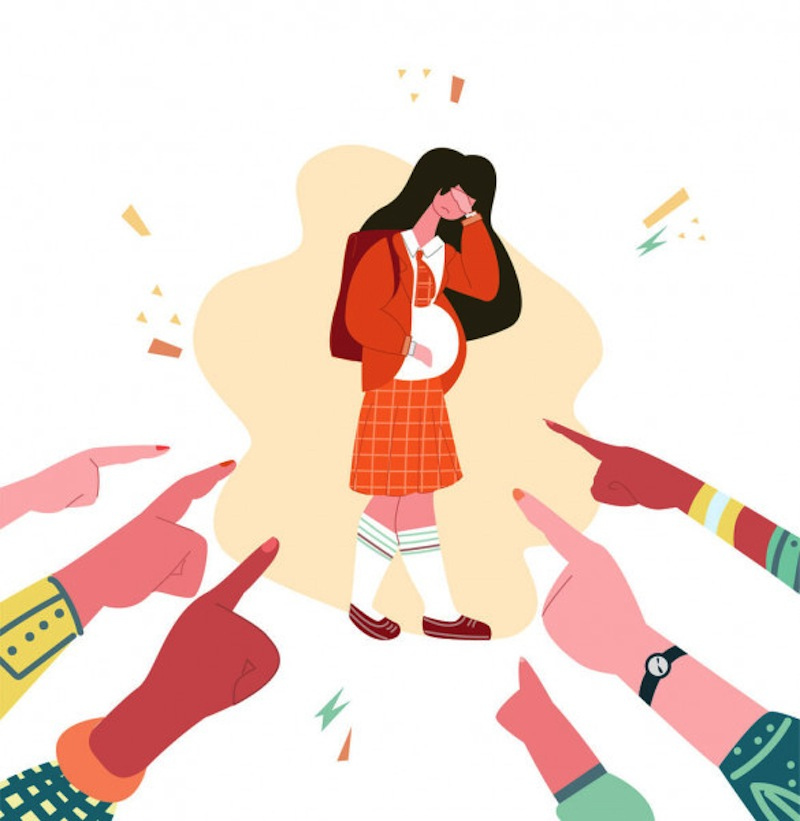

DIMENSIÓN DEL PROBLEMA
“EMBARAZO ADOLESCENTE”
Un embarazo en adolescencia genera cambios en la joven, en la joven y en quienes los rodean;
puede presentarse desde un drama familiar por la adaptación a la nueva situación a problemas
individuales y de salud de parte de la mamá adolescente.
Estratificado en grupos, de 12 a 15 años de edad fue de 6 por cada 1000 embarazos adolescentes ;
con diferencias notables en los grupos de 16 a 17 y de 18 a 19 años de edad, se reportan tasas de 101 y
225 embarazos por cada 1000 mujeres.

REGRESAR